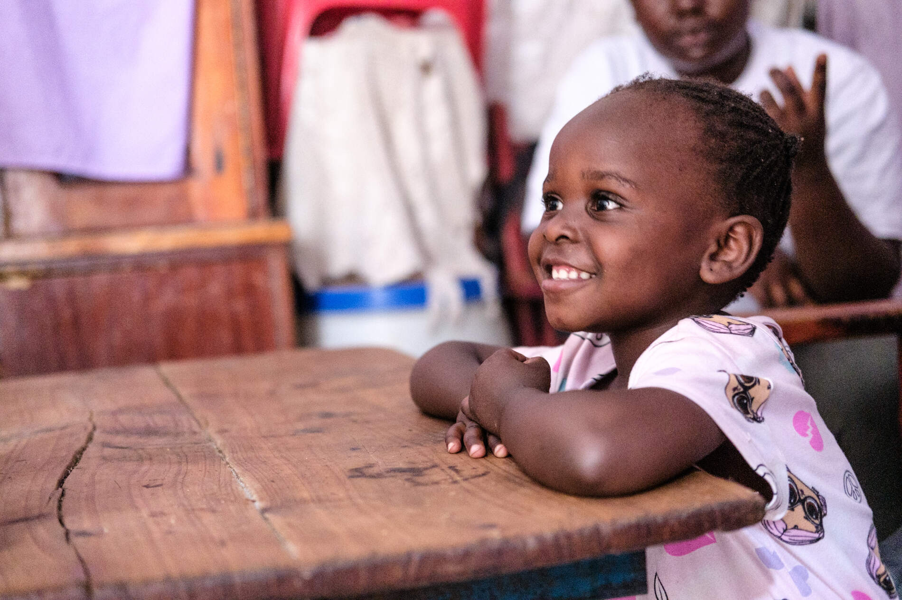
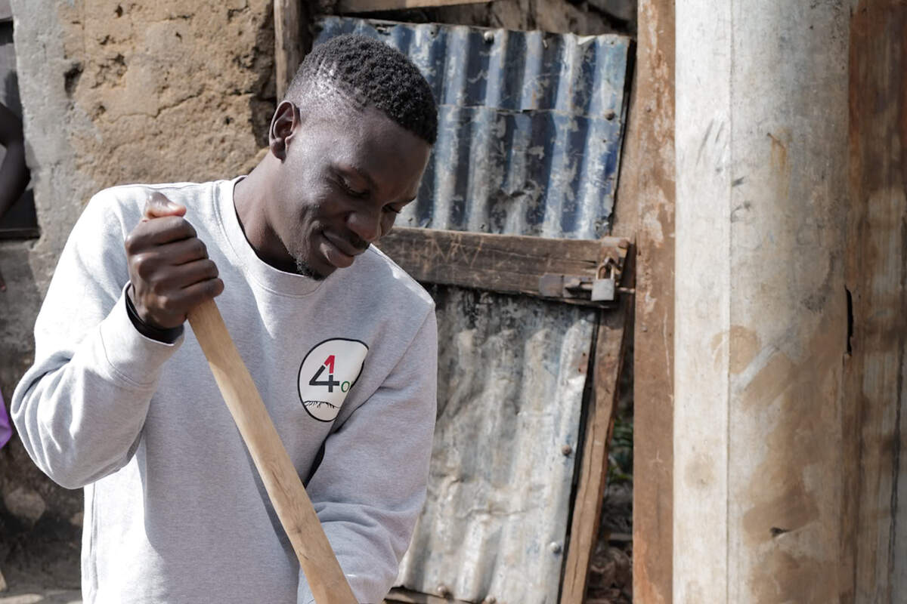
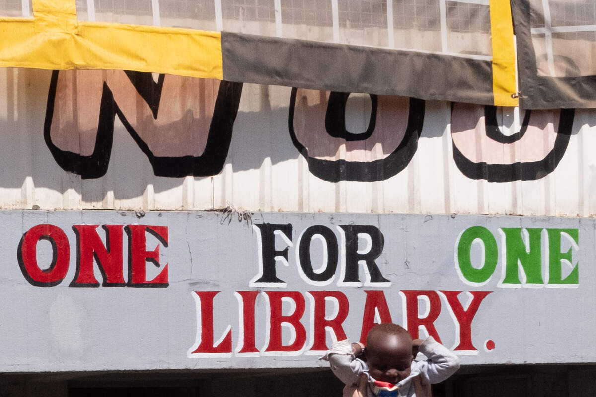
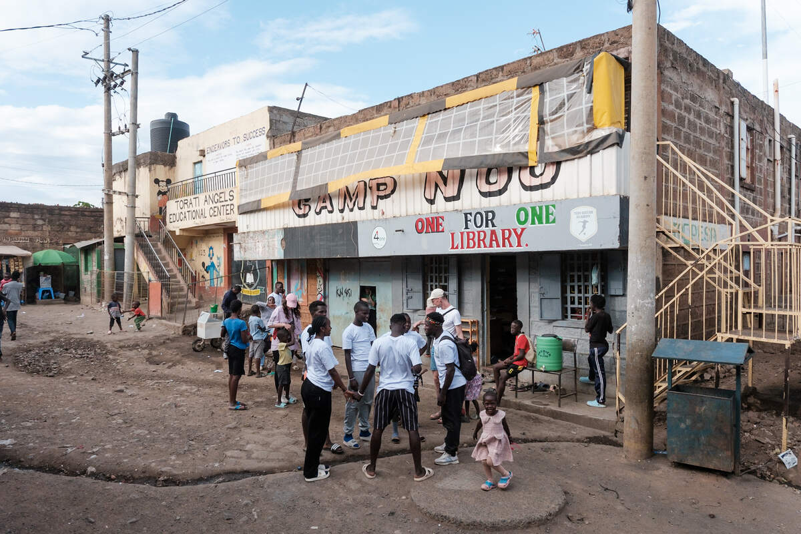
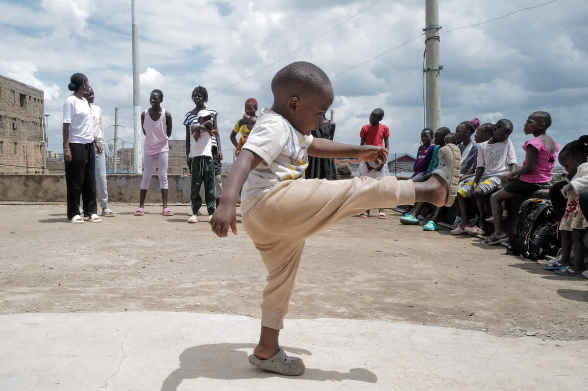

Raphael und seine Frau haben alle fünf Enkelkinder bei sich aufgenommen – ohne zu zögern. Sein Haus hat er mit eigenen Händen gebaut.
Familie Ouma
Schulgebühren für alle fünf Kinder

Wir ermöglichen 237 Kindern in den Slums von Nairobi den Schulbesuch – mit Schulgebühren, Büchern, einer warmen Mahlzeit und Menschen, die an sie glauben.
Jeder gespendete Euro kommt an. Wir arbeiten komplett ehrenamtlich – ohne Verwaltungsapparat, ohne Bürokosten. Deine Spende geht per Onlineüberweisung direkt an unser Team in Kenia und wird dort vor Ort eingesetzt: für Schulgebühren, die Büchereien, Porridge und die Menschen, die alles am Laufen halten.
Pro Überweisung an unser Team nach Kenia fallen minimale Bankgebühren an – gerechnet auf das Gesamtspendenvolumen ca. 0,5 %.
Klick dich rein – hinter jedem Projekt steckt ein Stück Alltag in Korogocho und Mathare.
Beispielwerte auf Basis unserer realen Kosten vor Ort. Die Kosten variieren je nach Schule.
Bei unseren Besuchen in Kenia dürfen wir tief in das Leben vieler Familien eintauchen.
Raphael und seine Frau haben alle fünf Enkelkinder bei sich aufgenommen – ohne zu zögern. Sein Haus hat er mit eigenen Händen gebaut.
Caroline zieht vier Kinder allein groß – mit Samosas und Wäschewaschen. Ihre älteste Tochter hat gerade die weiterführende Schule abgeschlossen.
Vickstone hat im Examen so gut abgeschnitten, dass er ein Regierungsstipendium erhielt – unser erster Stipendiat besucht nun ein sehr gutes Internat in Nairobi.
Am Sonntag, 26. Juli, ab 14 Uhr feiern wir in Traunstein – mit stimmungsvoller Musik, gutem Essen und einer Tombola. Hauptgewinn: eine Übernachtung in einem Viersternehotel in Südtirol. Alle Erlöse gehen an One for One.
Das Grundstück mitten in Korogocho ist gekauft, die Abrissarbeiten haben begonnen. Hier entsteht ein Zentrum für Kinder und Jugendliche – zum Lernen, Spielen, Arbeiten und Zusammenkommen.




Ob einmalige Spende, Dauerauftrag oder Patenschaft für ein Kind – jeder Beitrag kommt 1 : 1 an.